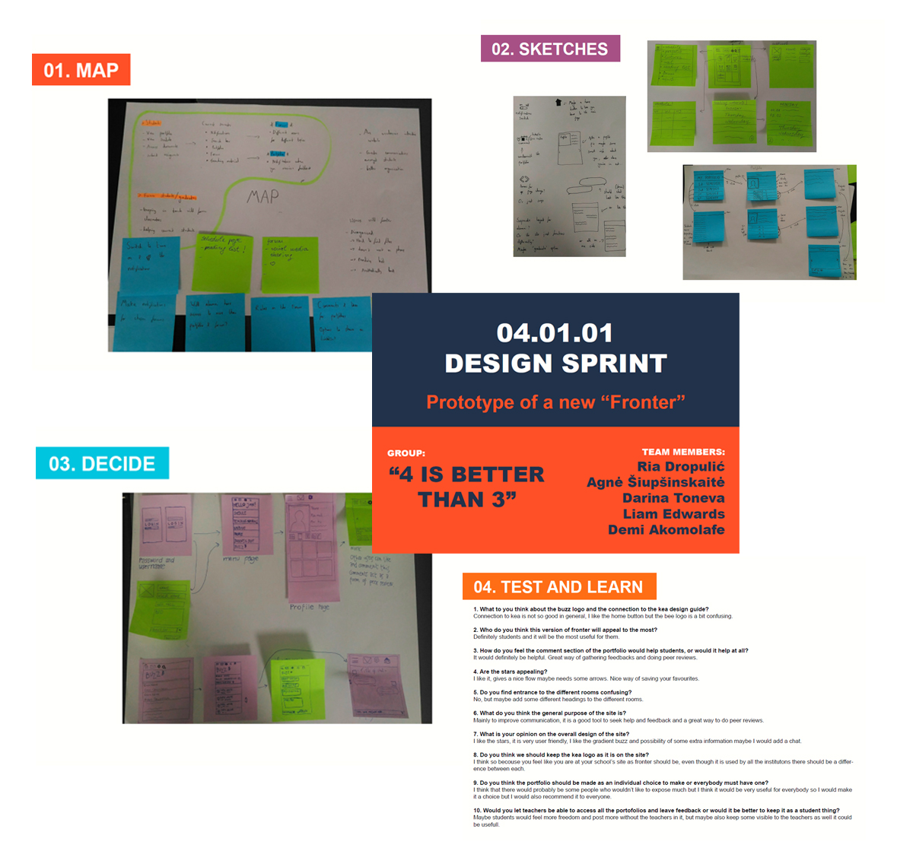

Design Sprint - A new "Fronter"
This was a group project and I had the pleasure of being part of a group called "4 Better Than 3" along with Ria, Agne, Demi and Liam.
The final goal of the project was to make XD prototype of a new "Fronter", trying to improve its design (according to KEA's Design Guide) and functionality. We had to go through a five days "Design Sprint" with five phases, namely Map, Sketch, Decide, Prototype, Test and learn. For the purpose of the "Design Sprint" we were divided in three groups by the roles that we have in the team - facilitators, designers and a decision maker.
My role in the project was to be a designer and a decision maker for just a short time. In general all group members took part in all the project processes.
